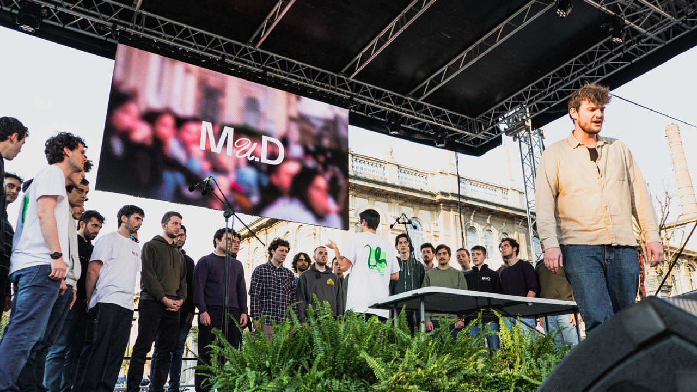
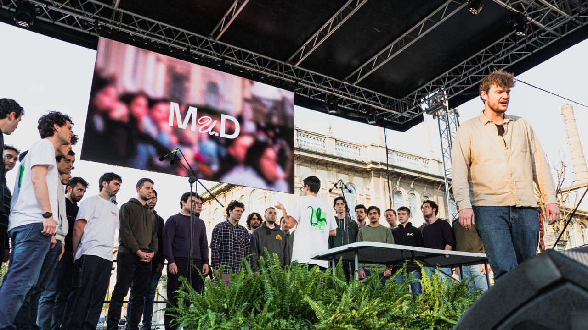

Milano University District
Mu.D is a cultural event that has taken place for the past two years in Piazza Leonardo da Vinci in Milan. Born from the initiative of a group of students, it offers reflections on contemporary issues through a positive and engaged perspective.
I was part of the team that developed the event’s communication from the ground up, contributing to the naming and the creation of the visual system. My main role was to design a scalable and adaptable identity, applied across all event touchpoints — from posters to the stage’s scenic panels.
I was part of the team that developed the event’s communication from the ground up, contributing to the naming and the creation of the visual system. My main role was to design a scalable and adaptable identity, applied across all event touchpoints — from posters to the stage’s scenic panels.


 
